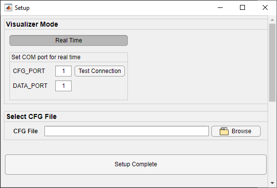

Overview of Gesture and Presence Detection for 64xx
===========
This lab demonstrates how TI single-chip millimeter-wave (mmWave) technology can be used for gesture and presence detection.
The lab uses the IWR6843ISK evaluation module (EVM) and integrates a complete radar processing chain onto the device.
The processing chain includes the analog radar configuration, analog-to-digital converter (ADC) capture, low-level FFT processing, and high-level gesture tracking algorithm.
<video width="640" height="360" autoplay loop controls>
<source src="images/gest_presence_overview_vid.webm" type="video/webm">
Gesture demo video
</video>
This lab is based on the scalable software architecture introduced with mmWave SDK 3.0, which enables simple and flexible deployment of processing components across compatible devices.
**NOTE**: This demo runs on an IWR68xx EVM but only uses the on-chip Hardware FFT acclerator (HWA) and does not utilize the on-chip c674x DSP, effectively emulating the performance on an xWR64xx device.
In this User Guide many of labels show xWR64xx but the demo is compatible with the IWR68xx device which is a superset device.
-----------
# Requirements
### Prerequisite
[[y! Run Out of Box Demo
Before continuing with this lab, users should first run the out of box demo for the EVM.
This will enable users to gain familiarity with the sensor's capabilities as well as the various tools used across all labs in the mmWave Industrial Toolbox. ]]
### Required and Supported mmWave Evaluation Modules (EVM)
This lab runs on the IWR6843ISK (60GHz) to emulate an IWR6443ISK.
The remainder of the guide will use "EVM".
Quantity | Item
------------------|-----------------
1 | Antenna Module Board: [IWR6843ISK](http://www.ti.com/tool/IWR6843ISK)
1 | OPTIONAL: [Industrial mmWave Carrier Board](http://www.ti.com/tool/MMWAVEICBOOST) for CCS based debugging
[[r! IWR6843 ES2.0 Only
This lab is only compatible with ES2.0 version of IWR6843. Check the device version on your IWR6843ISK using the on-chip device markings as shown below>
1. If line 4 reads `678A`, you have an ES2 device. In this case, this lab is compatible with your EVM.
2. If line 4 reads `60 GHZi`, you have an older ES1 device. In this case, the lab is NOT compatible with your EVM. ES2 IWR6843ISK boards are orderable from the EVM link above.
<img src="images/iwr6843_silicon_revision.png" width="500"/>
]]
### Additional Hardware Requirements
Quantity | Item | Details
---------|--------------------------|-----------------
1 | Computer | Windows 7 or 10 PC
1 | Micro USB Cable | Provided with EVM board
1 | Power Supply | If using MMWAVEICBOOST, 5V, 3A with 2.1-mm barrel jack (center positive). The power supply can be wall adapter style or a battery pack with a USB to barrel jack cable.
### Software
Tool | Version | Download Link
---------------------------|---------------------------|--------
TI mmWave SDK | 3.5.x.x | [Link to Latest mmWave SDK](http://software-dl.ti.com/ra-processors/esd/MMWAVE-SDK/latest/index_FDS.html) To access a previous version of the mmWave SDK scroll to the bottom of the table and click the link under "MMWAVE-SDK previous release". Repeat to continue stepping back to previous versions.
mmWave Industrial Toolbox | Latest | Download and install the toolbox. Go to [Using TI Resource Explorer & the mmWave Industrial Toolbox](../../../../docs/readme.html) for instructions.
MATLAB Runtime | 2019a (9.6) | Exact version required. https://www.mathworks.com/products/compiler/matlab-runtime.html
Uniflash | Latest | Uniflash tool is used for flashing TI mmWave Radar devices. [Download offline tool](http://www.ti.com/tool/UNIFLASH) or use the [Cloud version](https://dev.ti.com/uniflash/#!/)
-----------
Quickstart
===========
The quickstart guide will cover setting up the EVM, flashing firmware, and running the demo.
## 1. Setup the EVM for Flashing Mode
* For MMWAVEICBOOST + Antenna Module setup: Follow the instructions for [Hardware Setup for Flashing in MMWAVEICBOOST Mode](../../../common/docs/hardware_setup/hw_setup_mmwaveicboost_mode_flashing.html)
* For IWR6843ISK in Standalone/Modular Mode: Follow the instructions for [Hardware Setup of IWR6843ISK/ODS for Flashing Mode](../../../common/docs/hardware_setup/hw_setup_isk_ods_modular_mode_flashing.html)
## 2. Flash the EVM using Uniflash
Flash the binary associated with the EVM platform listed below using UniFlash. Follow the instructions for [using UniFlash](../../../common/docs/software_setup/using_uniflash_with_mmwave.html)
Platform| BIN Name | Location
---------|------------------------------------|------------
64xx | gesture_and_presence_det_64xx_demo.bin | `<INDUSTRIAL_TOOLBOX_INSTALL_DIR>\mmwave_industrial_toolbox_<VER>\labs\gesture_recognition\64xx_gesture_and_presence_det\prebuilt_binaries`
## 3. Setup the EVM for Functional Mode
* For MMWAVEICBOOST + Antenna Module setup: Follow the instructions for [Hardware Setup of MMWAVEICBOOST + Antenna Module for Functional Mode](../../../common/docs/hardware_setup/hw_setup_mmwaveicboost_mode_functional.html)
* For IWR6843ISK in Standalone/Modular Mode: Follow the instructions for [Hardware Setup of IWR6843ISK/ODS for Functional Mode](../../../common/docs/hardware_setup/hw_setup_isk_ods_modular_mode_functional.html)
At this point, the EVM should be powered, connected to the PC, flashed with the demo, and put in functional mode. The hardware setup is now complete.
## 4. Run the Lab
### 1. EVM Mounting and Scene Conditions
For a quick start evaluation, it is recommended to setup the EVM outside in an open area such as a parking lot.
Once the quick start is complete and an understanding of the lab's capabilities is gained, the lab can be run in more complex and application specific scenes.
For the quick start the EVM should be mounted:
- Facing the direction of expected motion and gesture.
- Oriented with the antenna on the topside of the EVM as shown in the video.
- For best performance the sensor should be mounted at the height comfortable for users to make swipe gestures and with minimal objects obstructing the area in front of the sensor (excepting an enclosure for the sensor)
### 2. Launch the Visualizer
[[y! MATLAB Runtime Version R2019a (9.6)
**Exact version** R2019a (9.6) required. Download from: https://www.mathworks.com/products/compiler/matlab-runtime.html
Other labs in the mmWave Industrial Toolbox may use version R2017a (9.2). For this lab, version R2019a (9.6) MUST also be installed. ]]
* Navigate to `<INDUSTRIAL_TOOLBOX_INSTALL_DIR>\mmwave_industrial_toolbox_<VER>\labs\gesture_recognition\64xx_gesture_and_presence_det\gui`
* Double click to launch **gesture_presence_visualizer.exe**
* A black console window will appear. After 30-120sec, a setup window will appear as shown below.
### 3. Configure Visualizer

**Specify COM ports**
* Enter the COM ports associated with the mmWave EVM.
* Optional: Use **Test Connection** to ensure that COM ports are available and a test command can be sent and received. If it fails check the COM port numbers and ensure that you do not have any other applications such as Uniflash or another visualizer open that may be occupying the ports.
**Select CFG File**
* Use the **Browse** button to select the CFG file to load to the device or enter the full path and file name into the text field box.
* To load the demo CFG file navigate to `..\mmwave_industrial_toolbox_<VER>\labs\gesture_recognition\64xx_gesture_and_presence_det\chirp_configs`
* Select the config file
**Setup Complete**
* Click the **Setup Complete** button to confirm all the settings and send the config to the mmWave EVM.
* The setup window will close and the main visualizer will open next.
NOTE: If the mmWave EVM was is currently running the new config file cannot be resent. The visualizer will instead open and attempt to continue parsing the incoming UART stream. To ensure that the intended CFG file can be loaded, toggle NRST on the EVM before clicking 'Setup Complete'. (This should have already been done when the EVM was returned to Functional Mode).
### 4. Understanding the Visualizer Output
The visualizer will show the following:
* Sleep mode or Presence detected mode: If motion is detected within 1.5m of the sensor, the visualizer will show Presence Detected. If no motion is detected the window shows "Sleep Mode".
* If in "Presence Detected" mode, the window will additionally show whether a Left to Right swipe gesture or Right to Left Swipe gesture is detected.
* NOTE: The most recent gesture detected will be displayed and persist on the screen until another gesture is made or the device goes to Sleep Mode.
When testing the demo the following tips should be considered:
* Presence detection is triggered if motion is detected in the sensor's field of view at a range of 1.5m.
* Swipe gestures should be made fairly quickly with the arm moving from one side of the EVM to the other.
* Gestures are only detected within 10-40cm from the front of the sensor.
* To troubleshoot issues with gesture detection try:
* Stepping back and ensuring the hand is within the recommended 10-40cm space. The body should ideally not be in this zone, directly in front of the sensor.
* Changing the speed of the swipe (see video for example)
* Ensuring a 1 sec pause between the swipe motions if there is a visualizer lag issue
* Pay attention that when retracting the arm an opposite swipe gesture is not accidentally made.
To end the visualizer session, exit out using the "X" in the upper right corner.
The visualizer saves the settings from the setup window and relaunching the visualizer will prepopulate any fields with the same values from the previous session.
This concludes the Quickstart Section
-----------
Developer's Guide
===========
* [Build the firmware from source code](#build-the-firmware-from-source-code)
* [Work with GUI source code](#work-with-gui-source-code)
Build the Firmware from Source Code
-----------
### 1. Software Requirements
Tool | Version | Download Link
----------------------------|---------------------------|--------------
TI mmWave SDK | 3.5.x.x | [Link to Latest mmWave SDK](http://software-dl.ti.com/ra-processors/esd/MMWAVE-SDK/latest/index_FDS.html) To access a previous version of the mmWave SDK scroll to the bottom of the table and click the link under "MMWAVE-SDK previous release". Repeat to continue stepping back to previous versions.
Code Composer Studio | 8.3.1 | [Code Composer Studio v8.3.1](http://processors.wiki.ti.com/index.php/Download_CCS#Code_Composer_Studio_Version_8_Downloads)
mmWave Industrial Toolbox | 4.x.x | Download and install the toolbox. Go to [Using TI Resource Explorer & the mmWave Industrial Toolbox](../../../../docs/readme.html) for instructions.
### 2. Import Lab Project
To import the source code into your CCS workspace, CCS projects are provided for the mmWave SDK Out-of-box demo in the mmWave Industrial Toolbox.
[[b! Project Workspace
When importing projects to a workspace, the files are LINKED into the workspace. It is important to note that modifying the files in the CCS workspace will also affect the source files.
Practice version control in the case that revisions need to be reverted.]]
- Start CCS and setup workspace as desired.
- Import the project(s) specified below for the EVM platform to CCS. See instructions for importing [here](../../../../docs/readme.html#import-ccs-projects-from-the-mmwave-industrial-toolbox-into-code-composer-studio)
Platform | Project Name | Location in Industrial Toolbox
----------|-------------------------|-----------------------------
64xx |gesture_and_presence_det_64xx_mss | `<INDUSTRIAL_TOOLBOX_INSTALL_DIR>\mmwave_industrial_toolbox_<VER>\`<br>`labs\gesture_recognition\64xx_gesture_and_presence_det\src`
- Verify that the import occurred without error: in CCS Project Explorer the MSS project should appear.
[[r! Error during Import to IDE
If an error occurs, check that the software dependencies listed above have been installed. Errors will occur if necessary files are not installed in the correct location for importing.
]]
### 3. Build the Lab
1. First, select the MSS project (gesture_and_presence_det_64xx_mss) so it is highlighted. Right click on the project and select **Rebuild Project**.
2. On successful build, the following should appear:
* In gesture_and_presence_det_64xx_mss → Debug, gesture_and_presence_det_64xx_mss.xer4f (this is the Cortex R4F binary used for CCS debug mode) and gesture_and_presence_det_64xx_demo.bin (this is the flashable binary used for deployment mode)
{{y Selecting Rebuild instead of Build ensures that the project is always re-compiled. This is especially important in case the previous build failed with errors.}}
[[r! Build Fails with Errors
If the build fails with errors, please ensure that all the software requirements are installed as listed above and in the mmWave SDK release notes.
]]
[[b! Note
As mentioned in the [Quickstart](#quickstart) section, pre-built binary files, both debug and deployment binaries are provided in the pre-compiled directory of the lab.
]]
### 4. Execute the Compiled Lab
There are two ways to execute the compiled code on the EVM:
* **Deployment mode**: In this mode, the EVM boots autonomously from flash and starts running the bin image
* Use the **gesture_and_presence_det_64xx_demo.bin** found at `<CCS_PROJECT_WORKSPACE_DIR>\gesture_and_presence_det_64xx_mss\Debug` and follow the same process in the [Quickstart](#quickstart) section except flash this binary instead.
* **Debug mode**: This mode is is used for downloading and running the executable from CCS. This mode enables JTAG connection with CCS while the lab is running and is useful during development and debugging.
* Follow the [CCS Debug Mode Guide](../../../common/docs/software_setup/using_ccs_debug.html), using the binaries listed below.
* After CCS Debug mode is setup, launch the visualizer and proceed as described in the [Run the Lab section of the Quickstart](#4-run-the-lab)
Debug binary | Location | Connect and load to
---------------|----------|----------------------
gesture_and_presence_det_64xx_mss.xer4f | `<CCS_PROJECT_WORKSPACE_DIR>\gesture_and_presence_det_64xx_mss\Debug` | Cortex_R4_0
-----------
Work with GUI source code
-----------
{{y Working with and running the visualizer source files requires a full MATLAB license not just the MATLAB Runtime Engine}}
* The visualizer source files are located at `<INDUSTRIAL_TOOLBOX_INSTALL_DIR>\mmwave_industrial_toolbox_<VER>\labs\gesture_recognition\64xx_gesture_and_presence_det\gui`
* Running gesture_presence_visualizer.m results in the same fucntionality as the executable used in the Quickstart section; please refer to the section for details.
* Files of interest:
* gesture_presence_visualizer.m: Main visualizer script that calls the setup, parsing, and plotting functions.
* readUARTToBuffer.m: Copies any bytes available on the serial port object to a buffer in the Matlab workspace
* parseBytes_TM: Receives the buffer and parses bytes into an output struct representing the data in the frame.
Data Formats
-----------
A TLV(type-length-value) encoding scheme is used with little endian byte order. For every frame, a packet is sent consisting of a fixed sized **Frame Header** and then a variable number of TLVs depending on what was detected in that scene. The TLVs can be of types representing the point cloud, target list object, and associated points.
### Frame Header
Size: 52 bytes
```Matlab
frameHeaderStructType = struct(...
'magicWord', {'uint64', 8}, ... % syncPattern in hex is: '02 01 04 03 06 05 08 07'
'version', {'uint32', 4}, ... % Software Version
'platform', {'uint32', 4}, ... % A6843
'numDetObj', {'uint32', 4}, ... % Number of points in point cloud
'totalPacketLen', {'uint32', 4}, ... % In bytes, including header
'frameNumber', {'uint32', 4}, ... % Frame Number
'subFrameNumber', {'uint32', 4}, ... % Sub-Frame number
'chirpProcessingMargin', {'uint32', 4}, ... % time left after chirp processing in cycles
'frameProcessingMargin', {'uint32', 4}, ... % time left after frame processing in cycles
'trackingProcessingTime', {'uint32', 4}, ... % time to run tracker
'uartSendingTime', {'uint32', 4}, ... % time to send uart message
'numTLVs' , {'uint16', 2}, ... % Number of TLVs in this frame
'checksum', {'uint16', 2}); % Subframe number.
```**Frame Header Structure in MATLAB syntax for name, type, length**
### TLVs
The TLVs can be of type **TARGET_LIST_3D**
#### **TLV Header**
Size: 8 bytes
```Matlab
% TLV Type: 06 = DPIF Point cloud spherical, 07 = Target object list, 08 = Target index, 09 = DPIF Point Cloud Side Info
tlvHeaderStruct = struct(...
'type', {'uint32', 4}, ... % TLV object
'length', {'uint32', 4}); % TLV object Length, in bytes, including TLV header
```**TLV header in MATLAB syntax**
Following the header, is the the TLV-type specific payload
#### **Target Object TLV**
Type: TARGET_LIST_3D
Size: sizeof (targetStruct3D) x numberOfTargets
Each Target List TLV consists of an array of targets. Each target is defined in 68 bytes.
```java
targetStruct3D = struct(...
'tid', {'uint32', 4}, ... % Track ID
'posX', {'float', 4}, ... % Target position in X dimension, m
'posY', {'float', 4}, ... % Target position in Y dimension, m
'velX', {'float', 4}, ... % Target velocity in X dimension, m/s
'velY', {'float', 4}, ... % Target velocity in Y dimension, m/s
'accX', {'float', 4}, ... % Target acceleration in X dimension, m/s2
'accY', {'float', 4}, ... % Target acceleration in Y dimension, m/s
'posZ', {'float', 4}, ... % Target velocity in Y dimension, m/s
'velZ', {'float', 4}, ... % Target acceleration in X dimension, m/s2
'accZ', {'float', 4}, ... % Target acceleration in Y dimension, m/s
```**Target Structure in MATLAB syntax**
Tracker Customization
-----------
* Please refer to the **People Counting Demo Customization Guide** which can be found at `C:\ti\<mmwave_industrial_toolbox_install_dir>\labs\long_range_people_detection\68xx_long_range_people_det\docs\pplcount_customization_guide.pdf`
Need More Help?
===========
* Additional resources in the documentation of the mmWave SDK:
* mmWave SDK Module Doc located at `<mmwave_sdk_install_dir>/docs/mmwave_sdk_module_documentation.html`
* mmWave SDK User's Guide located at `<mmwave_sdk_install_dir>/docs/mmwave_sdk_user_guide.pdf`
* Find answers to common questions on [mmWave E2E FAQ](https://e2e.ti.com/support/sensor/mmwave_sensors/w/wiki)
* Search for your issue or post a new question on the [mmWave E2E forum](https://e2e.ti.com/support/sensor/mmwave_sensors/f/1023)